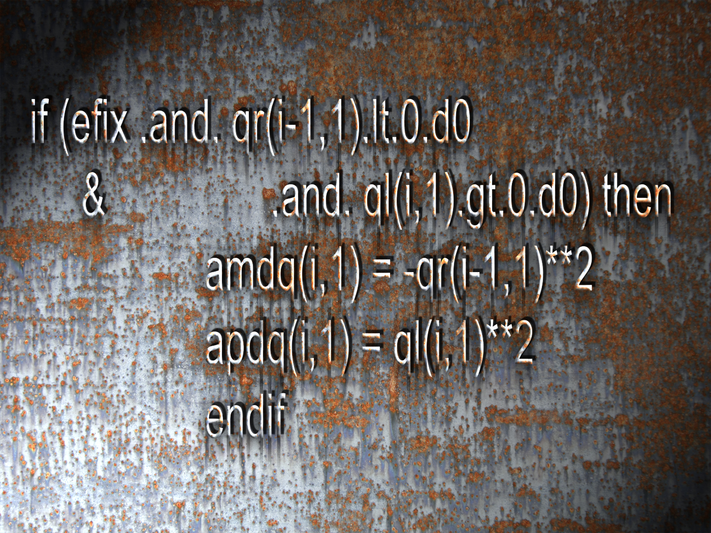

Software

- DocOnce for a unified approach to scientific publishing in various formats (LaTeX/PDF, Sphinx, Bootstrap HTML, IPython notebook, Markdown, wiki, reveal.js, deck.js, LaTeX Beamer, Remark, ...)
- Pysketcher for specifying scientific drawings/sketches through programs
- Odespy for a unified Python interface to lots of ODE software
- Parampool for generating interfaces to simulation codes
- SciTools for various scientific computing and plotting capabilities in Python, built on
numpy,scipy,ScientificPython,matplotlib,gnuplot, ... - Software examples from the book A Primer on Scientific Programming with Python
- Bumpy for introductory physics examples on scientific computing with Python
- FEniCS tutorial: PDF, HTML for introducing the FEniCS software for solving partial differential equations by the finite element method
- FEniCS mixed for combining FEniCS with external third-party software
- Diffpack: a general package for solving partial differential equations by the finite element method (work 1991-2003)